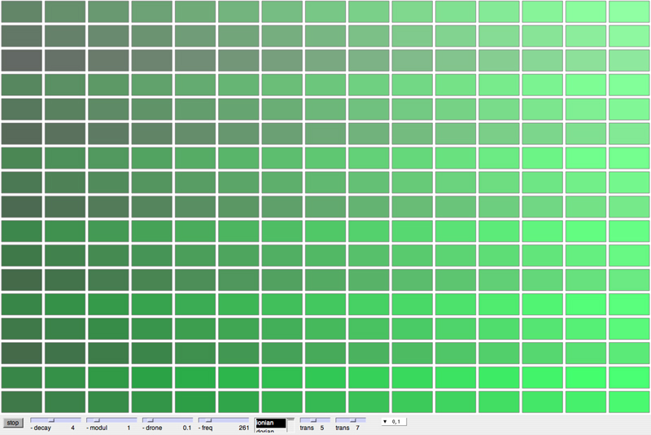

ixiQuarks : ScaleSynth

| Scale Synth |
|
The Scale Synth is a fullscreen instrument that represents a scale in each
row. There are two octaves in a horizontal row and they can contain various
scales from a menu. There is a drone that keeps a "fundamental"
or a "reference" for improvisation. |